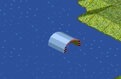

zur Simutrans-Anleitung
Schiffdepots können nur auf einer freien Wasserfläche gebaut werden. Es ist zweckmäßig ein Schiffdepot in der Nähe der Handelsrouten der Schiffe zu bauen um unnötige Umwege zu vermeiden.

von Henrik Wolff eMail@Henrik-Wolff.de